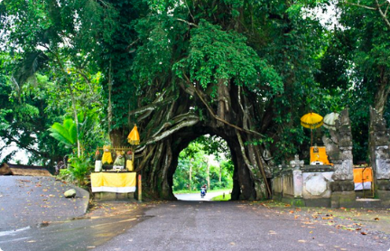
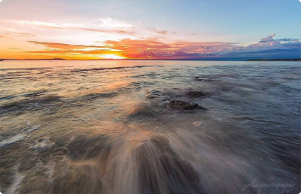

AYO BERKUNJUNG KE JEMBRANA
Kabupaten Jembrana adalah sebuah kabupaten yang terletak di ujung barat pulau Bali, Indonesia. Ibu kotanya berada di Negara. Kabupaten Jembrana berbatasan dengan Kabupaten Tabanan di timur, Kabupaten Buleleng di Utara, Selat Bali di barat dan Samudera Hindia di selatan.
Objek Wisata
Bunut Bolong
Bunut Bolong sebenarnya bukan sebuah fenomena pohon yang baru. Pohon bunut dengan lubang di dalamnya ini sudah ada sejak sebelum zaman kolonial. Bahkan di dalam lubang itu merupakan jalan utama di Asah Duren, Manggis Sari Pekutatan ini. Warga disana juga mengatakan bahwa pohon ini sudah ada sejak lama dan masih bertahan hidup hingga saat ini. Bila kita melihat lebih dekat, pohon bunut ini sangatlah besar. Pohon ini memiliki banyak ranting yang terlipat-lipat dan saling terlilit. Bentuknya pun sangat unik hingga membuat lobang di bagian tengahnya. Warga Asah Duren pun sangat memperhatikan keberadaan pohon ini. Pohon ini bagiannya diberikan kain putih kuning sebagai simbol bahwa pohon tersebut disakralkan. Penduduk setempat juga mengahturkan sesaji pada saat hari-hari tertentu berkaitan dengan hari-hari suci umat Hindu. Bahkan saat upacara adat khususnya pernikahan, kendaraan mempelai yang melintas di jalan Asah Duren dilarang melewati lubang tersebut melainkan menggunakan jalan alternatif yang berada di sebelah pohon bunut tersebut. Begitu pula saat ada upacara kematian, jenazah atau mayat dilarang melintas di bawah lubang tersebut dan diminta mengambil jalan yang di sebelahnya. Baca Selanjutnya>>>
Pantai Baluk Rening
Pantai Baluk Rening merupakan salah satu tempat wisata Alam yang ada di KABUPATEN JEMBRANA. KABUPATEN JEMBRANA adalah salah satu Kota. Kabupaten yang memiliki banyak tempat wisata yang terletak di Provinsi BALI. Jadi, jika kamu berkunjung ke KABUPATEN JEMBRANA, jangan lupa untuk berkunjung ke Pantai Baluk Rening maupun ke tempat wisata terdekat dari lokasi dan paling hits lainnya. Pantai Baluk Rening menjadi salah satu spot wisata di Indonesia yang banyak diminati oleh para wisatawan karena keindahan dari laut Indonesia yang tidak perlu diragukan lagi. Walaupun ada banyak sekali pantai di Indonesia, Pantai Baluk Rening memiliki pemandangan yang tidak kalah indah dibandingkan dengan pantai-pantai lainnya. Selain menikmati pemandangan yang indah di sekitar Pantai Baluk Rening, kamu juga dapat berfoto bersama keluarga, teman-teman ataupun melakukan aktivitas-aktivitas lainnya. Terlebih lagi jika kamu merasa sangat jenuh dan lelah karena telah bekerja keras selama weekdays, kamu wajib berkunjung ke Pantai Baluk Rening pada weekend untuk melihat melihat pemandangan yang luar biasa indahnya nan menyejukkan mata, kamu akan merasakan kesegaran yang tidak akan pernah kamu dapatkan di Kota. Baca Selanjutnya>>>
Sarana Akomodasi
Hotel
Hotel Galuh
Kamar fungsional dengan wastafel batu buatan tangan menawarkan TV layar datar dan kulkas mini. Semua kamar memiliki balkon atau teras. Antar-jemput ke restoran terdekat.
Rp. 450.000/Night
Puri
Puri Dajuma
Puri Dajuma Villas adalah pilihan sempurna untuk menginap di pantai di Pekutatan. Tamu yang ingin memanjakan diri bisa menikmati pijat.
Rp. 300.000/Night
Restaurant
Betutu Men Tempeh
Dekat Pelabuhan Gilimanuk, ada rumah makan ayam betutu legenda sejak 1978. Ayam betutu salah satu makanan tradisional Bali populer. Restaurant ini sering dikunjungi.
Rp. 150.000/Start